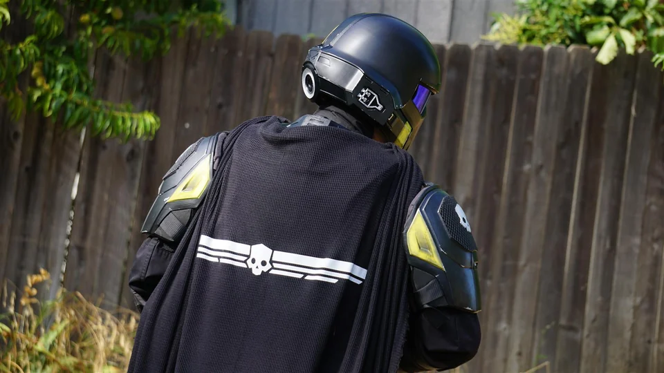
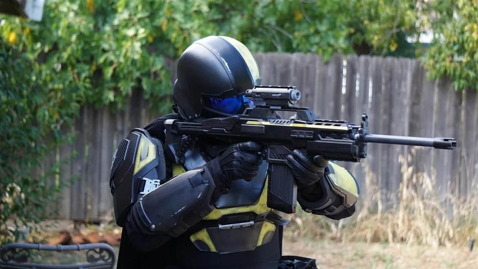

My B-01 costume from Helldivers 2 combines printed armor, sewn clothing, aluminum details, nylon webbing, vinyl, and airbrushed paint.


Fit and finish
I adjusted the fit and spacing of the plates alongside the clothing and straps. Sanding and paint finished the printed surfaces.

Game reference
I compared the costume with the game reference while working on the plate shapes, spacing, and paint.